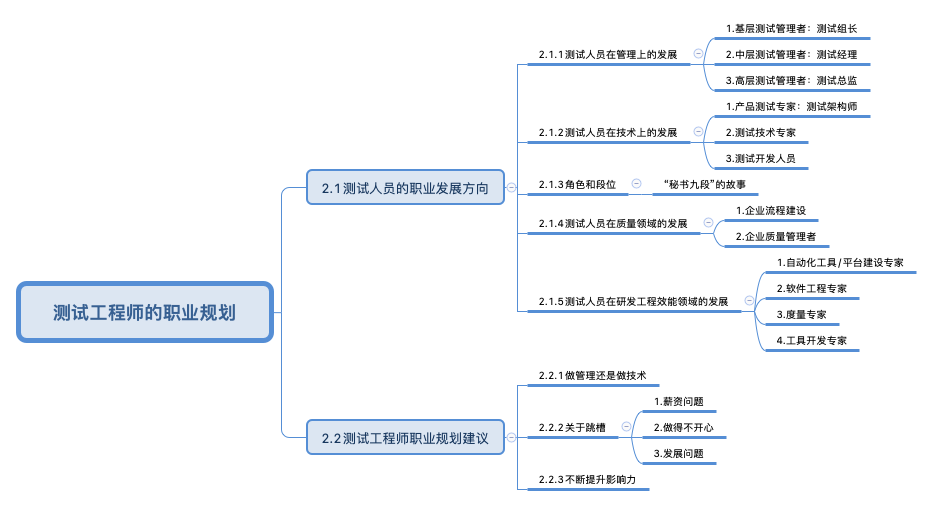

测试工程师的职业规划¶

内容大纲¶

原文解读¶
测试人员有2个发展方向：管理和技术。管理方向需要对产品测试全流程负责，他们需要和不同角色（如产品、开发、维护、市场、服务人员）进行沟通协作，完成产品目标，在管理方面要负责测试团队的“选育用留”，在技术方面要能解决团队测试中遇到的困难、难题，不断提升团队的测试能力。技术方向需要掌握测试开发技术栈，包括自动化测试、性能测试、安全测试、运维能力、开发能力、计算机基础知识等，需要精通某个领域。
测试架构师，属于技术上的发展方向，定位为产品测试专家，其主要职责是对不同的组织、产品、研发模式做出最适合当前状况的选择，进行刚刚好的测试，为产品成功保驾护航，提供支撑。不是所有公司都有测试架构师这个职位，但它却是一个测试人员值得努力的方向。
职业发展除了岗位头衔变化以外，还有段位提升，测试一段：能执行；测试二段：能设计；测试三段：能深入；测试四段：能带队；测试五段：能固化；测试六段：能引领。测试人员工作3年和工作5年应该段位是有所不同的。
测试除了管理和技术，还有质量领域和研发工程效能领域的发展，不过相对来说专职岗位比较少，更多的是一种附带能力要求。要求能做流程建设，属于管理的附带能力。要求能做平台开发，属于技术的附带能力。
做管理还是技术？不用二选一，管理和技术随着职业发展，是能相互转换的，多元化发展才是顺应这个时代的选择。做了管理也不能放弃技术，做了技术也需要适当管理。
关于跳槽，强烈建议不要裸辞，跳槽的理由归纳起来无非三个：薪资问题、做得不开心和发展问题。薪资问题，跳槽带来的涨幅往往比公司内部涨薪要高，但频繁跳槽会导致缺失稳定性，鱼与熊掌不可兼得，要做适当取舍；做得不开心，没有一个完美的公司，有时候还是需要自己调整心态，改变自己；发展问题，除了提升职位以外，还可以想办法提高段位，而不是急着离职。
无论怎么规划自己的职业发展，核心都是不断提升自己的影响力。无论是哪个管理者，在考虑晋升的时候，一定会把机会给最能帮他扛事情，最能解决问题，也最被团队认可的那位。主动承担，做一些有挑战的事情，敢于为团队解决问题，这样一定会有脱颖而出的机会。
参考资料：
《测试架构师修炼之道》第2版第2章测试工程师的职业规划